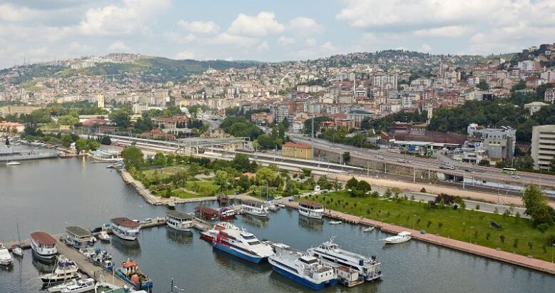

WELCOME!
Kocaeli is one of Turkey's cities rich in history and culture. On this site, you can find information about Kocaeli's magnificent historical mansions and unique bridges, and start exploring the city's rich cultural heritage.

While Kocaeli's historical mansions take you back to the past, its impressive bridges reveal the architectural beauties of the city. Come on, start exploring these historical places!